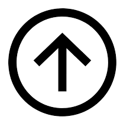

Bitcoin: Elektroniczny System Pieniężny Typu Peer-to-Peer.
Abstrakt. Pieniądz elektroniczny w formie czysto peer-to-peer umożliwiłby
płatności online wysyłane bezpośrednio od nadawcy do odbiorcy bez pośrednictwa
instytucji finansowej. Podpisy cyfrowe oferują częściowe rozwiązanie problemu,
lecz tracimy ich główne korzyści, jeśli nadal potrzebna jest zaufana strona trzecia, by
zapobiec fałszerstwu polegającym na podwójnym wydaniu tych samych środków.
Proponujemy rozwiązanie problemu podwójnego wydatkowania przy użyciu sieci
peer-to-peer. Sieć opatruje transakcje znacznikami czasu, haszując je na ciągły
łańcuch algorytmu proof-of-work z wykorzystaniem skrótów kryptograficznych
(ang. hash), tworząc zapis, którego nie da się zmienić bez wykonywania od nowa
algorytmu proof-of-work. Najdłuższy łańcuch nie tylko służy jako dowód
zaobserwowanego ciągu zdarzeń, ale i dowód, że pochodzi on z największej puli
wykonanej pracy. Dopóki większość mocy obliczeniowej kontrolowana jest przez
węzły, które nie współpracują w ataku na sieć, będą one generowały najdłuższy
łańcuch i pozostawią atakujących w tyle. Sama sieć wymaga tylko minimalnej
struktury. Wiadomości przekazywane są przy zachowaniu najwyższej staranności,
a węzły mogą do woli opuszczać sieć i do niej wracać, akceptując najdłuższy łańcuch
proof-of-work jako dowód tego, co miało miejsce pod ich nieobecność.
1. Wprowadzenie
Handel w Internecie jest niemal całkowicie zależny od instytucji finansowych, pełniących rolę
zaufanego pośrednika przetwarzającego płatności elektroniczne. Choć dla większości transakcji
system ten się w miarę sprawdza, to nadal cierpi on z powodu nieodzownych słabości modelu
opartego o zaufanie. Całkowicie nieodwracalne transakcje nie są tak naprawdę możliwe, jako że
instytucje finansowe nie są w stanie uniknąć pośredniczenia w sporach. Koszty pośrednictwa
zwiększają koszty transakcji, ograniczając minimalną praktyczną wartość transakcji i eliminując
możliwość niewielkich, swobodnych transakcji, do tego dochodzą większe koszty w postaci utraty
zdolności dokonywania nieodwracalnych płatności za nieodwracalne usługi. Wraz z możliwością
cofania transakcji, rozpowszechnia się potrzeba zaufania. Sprzedawcy muszą być nieufni wobec
swych klientów, żądając od nich więcej informacji, niż zwykle byłoby to konieczne. Pewien
odsetek oszustw przyjmuje się jako nieunikniony. Owych kosztów i niepewnych płatności można
uniknąć w transakcjach wykonywanych osobiście przy użyciu gotówki, nie istnieje jednak
mechanizm umożliwiający płatności kanałem komunikacji bez udziału zaufanej strony trzeciej.
Potrzebny jest wobec tego elektroniczny system płatności oparty o dowód kryptograficzny,
a nie zaufanie, który pozwala dowolnym dwóm dobrowolnie podejmującym decyzje stronom na
dokonywanie bezpośrednich transakcji między sobą bez potrzeby angażowania zaufanej strony
trzeciej. Transakcje, których cofnięcie byłoby obliczeniowo niepraktyczne, chroniłyby
sprzedawców przed oszustwem, zaś dla ochrony kupujących można byłoby wdrożyć rutynowe
mechanizmy depozytowe. W niniejszej pracy proponujemy rozwiązanie problemu podwójnego
wydania wykorzystujące serwer znaczników czasu typu peer-to-peer do generowania obliczeniowego dowodu porządku chronologicznego transakcji. System jest bezpieczny, o ile
uczciwe węzły kolektywnie kontrolują większą moc obliczeniową niż jakakolwiek współpracująca
grupa węzłów atakujących.
2. Transakcje
Elektroniczną monetę definiujemy jako łańcuch podpisów cyfrowych. Każdy z właścicieli
przekazuje monetę następnemu, podpisując cyfrowo hash poprzedniej transakcji oraz klucz
publiczny następnego właściciela dopisując je na końcu monety. Odbiorca może zweryfikować
podpisy celem zweryfikowania łańcucha własności. Oczywiście problemem jest to, że odbiorca nie jest w stanie zweryfikować, czy jeden z
właścicieli nie wydał monety podwójnie. W takim przypadku powszechnym rozwiązaniem jest
wprowadzenie zaufanego organu centralnego, bądź mennicy, która sprawdza każdą transakcję pod
kątem podwójnego wydatkowania. Po każdej transakcji moneta musi zostać zwrócona do
mennicy celem wydania nowej monety, i jedynie monety wydane bezpośrednio przez mennicę
można uznać za niewydane podwójnie. Problem takiego rozwiązania polega na tym, że los całego
systemu pieniężnego zależny jest od firmy prowadzącej mennicę, gdzie każda transakcja musi
przez nią przejść, tak jak w systemie bankowym.
Musimy znaleźć sposób, który umożliwi odbiorcy sprawdzenie, czy poprzedni właściciele nie
podpisali żadnych wcześniejszych transakcji. Na nasze potrzeby uznamy za istotną tylko
najwcześniejszą transakcję, nie interesują nas zatem późniejsze próby podwójnego wydatkowania.
Jedynym sposobem na potwierdzenie braku transakcji jest znajomość wszystkich transakcji.
W modelu opartym o mennicę, to mennica była świadoma wszystkich transakcji i decydowała,
która z nich była pierwsza. Aby tego dokonać bez zaufanej strony trzeciej, transakcje muszą być
ogłaszane publicznie [1], i potrzebny nam jest system, w którym uczestnicy zgadzają się na jedną
historię porządku transakcji, w jakim je otrzymywano. Odbiorca potrzebuje dowodu, iż w czasie
każdej transakcji większość węzłów zgodnie uznaje ją za tą pierwszą.
3. Serwer Znaczników Czasu
Proponowane przez nas rozwiązanie zaczyna się od serwera znaczników czasu. Serwer
znaczników czasu działa poprzez opatrzenie znacznikiem czasu hasha bloku elementów i
rozpowszechnienie hasha, przykładowo w gazecie lub poście na Usenecie [2-5]. Znacznik czasu
stanowi dowód, iż dane musiały wówczas istnieć, rzecz jasna, aby znaleźć się w hashu. Każdy
znacznik czasu zawiera poprzedni znacznik w swym hashu, tworząc łańcuch, gdzie każdy kolejny
znacznik wzmacnia znaczniki go poprzedzające.
4. Proof-of-Work
Aby zaimplementować serwer znaczników czasu na zasadzie peer-to-peer, potrzebny nam będzie
system proof-of-work podobny do Hashcash Adama Back [6], a nie tylko gazeta czy posty na
Usenecie. System proof-of-work szuka wartości, której hash, przykładowo SHA-256, rozpoczyna
się serią bitów zerowych. Przeciętny nakład wymaganej pracy jest wykładniczy do wymaganej
liczby bitów zerowych i można go zweryfikować przy wykonaniu pojedynczego hasha.
W naszej sieci znaczników czasu zaimplementujemy system proof-of-work poprzez
inkrementację parametru nonce w bloku, aż do uzyskania wartości, dla której hash bloku zyskuje
wymagane bity zerowe. Kiedy już włożony wysiłek obliczeniowy spełni wymagania proof-ofwork, bloku nie da się zmienić bez ponownego wykonania obliczeń. W miarę dołączania za nim
kolejnych bloków, jego zmiana wymagałaby wykonania od nowa wszystkich bloków dodanych po
nim. Algorytm proof-of-work rozwiązuje również problem ustalania reprezentacji przy podejmowaniu
decyzji większości. Jeśli większość ustala się na zasadzie jednego adresu IP na jeden głos,
oszukiwać mógłby każdy dysponujący wieloma adresami IP. Proof-of-work działa w praktyce na
zasadzie jeden-procesor-jeden-głos. Decyzja większości reprezentowana jest przez najdłuższy
łańcuch, który zgromadził największy wysiłek algorytmu proof-of-work. Jeśli większość mocy
obliczeniowej kontrolowana jest przez uczciwe węzły, uczciwy łańcuch będzie rósł najszybciej
i zostawi w tyle wszelkie konkurujące łańcuchy. Aby zmodyfikować wcześniejszy blok, atakujący
musiałby wykonać od nowa proof-of-work dla tego bloku i wszystkich dodanych po nim, po czym
dogonić i prześcignąć pracę uczciwych węzłów. Później pokażemy, iż prawdopodobieństwo
nadgonienia przez wolniejszego atakującego spada wykładniczo wraz z dodawaniem kolejnych
bloków.
Aby zrekompensować wzrastającą szybkość sprzętową oraz zmieniające się z czasem
zainteresowanie dbaniem o węzły, poziom trudności proof-of-work ustalany jest przy pomocy
średniej ruchomej celującej w średnią liczbę bloków na godzinę. Jeśli są one generowane zbyt
szybko, poziom trudności wzrasta.
5. Sieć
Kroki potrzebne do funkcjonowania sieci są następujące:
1) Nowe transakcje przekazywane są do wszystkich węzłów.
2) Każdy węzeł gromadzi nowe transakcje w blok.
3) Każdy węzeł pracuje nad znalezieniem trudnego proof-of-work dla swego bloku.
4) Kiedy węzeł odnajdzie proof-of-work, ogłasza blok do wszystkich węzłów.
5) Węzły akceptują blok wyłącznie wtedy, gdy wszystkie zawarte w nim transakcje są
poprawne i nie zostały już wydane.
6) Węzły podejmują decyzję o akceptacji bloku, pracując nad stworzeniem następnego bloku
w łańcuchu, używając hasha zaakceptowanego bloku jako hasha poprzednika.
Węzły zawsze uznają najdłuższy łańcuch za ten prawidłowy i pracują ciągle nad jego
wydłużeniem. Jeśli dwa węzły przekazują różne wersje następnego bloku równocześnie, niektóre
węzły mogą odebrać jeden lub drugi wcześniej. W takim przypadku pracują nad pierwszym
odebranym, ale zapisują drugą gałąź na wypadek, gdyby stała się dłuższa. Remis zostaje
rozstrzygnięty, gdy następny proof-of-work zostanie wykryty i jedna z gałęzi stanie się dłuższa;
węzły pracujące nad drugą gałęzią przestawią się wówczas na tą dłuższą.
Informacja o nowych transakcjach nie musi koniecznie docierać do wszystkich węzłów. O ile
dotrą one do wielu węzłów, w niedługim czasie trafią do bloku. Przekazy bloków tolerują również
zagubione wiadomości. Jeśli węzeł nie odbierze bloku, zażąda go po odebraniu następnego bloku,
kiedy zauważy zgubę.
6. Zachęty
Zwyczajowo pierwsza transakcja w bloku to specjalna transakcja tworząca nową monetę dla
twórcy bloku. Stanowi to dla węzłów zachętę do wspierania sieci, oraz daje sposób na wstępne
wprowadzenie monet do obiegu, jako że nie istnieje organ centralny je wydający. Ciągłe
dodawanie stałej ilości nowych monet jest analogiczne do poszukiwaczy złota zużywających
zasoby, aby wprowadzić złoto do obiegu. W naszym przypadku to czas procesora i elektryczność
są zużywane.
Za zachętę mogą również posłużyć opłaty transakcyjne. Jeśli wartość wyjściowa transakcji
jest niższa od jej wartości wejściowej, różnica stanowi opłatę za transakcję dodawaną do wartości
zachęty bloku zawierającego transakcję. Kiedy już z góry ustalona liczba monet wejdzie do
obiegu, zachęta może płynąć całkowicie z opłat transakcyjnych i być w pełni wolna od inflacji.
Zachęta może pomóc motywować węzły do uczciwości. Jeśli chciwy atakujący jest w stanie
zgromadzić więcej mocy obliczeniowej, niż wszystkie uczciwe węzły razem wzięte, musiałby
wybierać pomiędzy wykorzystaniem jej do oszukania ludzi poprzez refundowanie swych
płatności, lub przy jej użyciu tworzyć nowe monety. Bardziej opłacałoby się mu przestrzegać
zasad, dzięki którym może zyskać więcej nowych monet, niż wszyscy inni razem, zamiast
podkopywać system oraz wartość swego własnego majątku.
7. Odzyskiwanie Przestrzeni Dyskowej
Kiedy już najnowsza transakcja monety zostanie pogrzebana pod wystarczającą ilością bloków,
wydane przed nią transakcje można usunąć celem oszczędności przestrzeni dyskowej. W celu
ułatwienia tego procesu bez naruszania hasha bloku, transakcje haszowane są przy użyciu
Drzewa Merkle (n/t: Drzewo Skrótów) [7][2][5], gdzie tylko korzeń zawarty jest w hashu bloku.
Stare bloki można wówczas pomniejszyć, przycinając gałęzie drzewa. Haszów pośrednich nie
trzeba przechowywać. Nagłówek bloku bez transakcji zajmuje około 80 bajtów. Jeśli założymy, że bloki generowane
są co 10 minut, 80 bajtów * 6 * 24 * 365 = 4,2MB rocznie. Wziąwszy pod uwagę, iż nowe
komputery w roku 2008 zwykle mają 2GB pamięci RAM, a Prawo Moore'a przewiduje obecnie
wzrost o 1,2GB rocznie, pamięć nie powinna stanowić problemu nawet, jeśli nagłówki bloków
muszą być w niej przechowywane.
8. Uproszczona Weryfikacja Płatności
Weryfikacja płatności możliwa jest bez potrzeby korzystania z pełnego węzła sieciowego.
Użytkownik przechowywać musi jedynie kopię nagłówków bloków najdłuższego łańcucha proofof-work, którą może uzyskać przeszukując węzły sieci, aż uzna, iż znalazł najdłuższy łańcuch,
skąd może uzyskać gałąź Merkle łączącą transakcję z blokiem, w którym został oznaczony
znacznikiem czasu. Nie może on sam sprawdzić transakcji, ale łącząc ją do punktu na łańcuchu
może dostrzec, iż węzeł sieciowy ją zaakceptował, a dodane później bloki jeszcze bardziej
potwierdzają akceptację ze strony sieci. O ile uczciwe węzły kontrolują sieć, weryfikacja jest wiarygodna, jednak gdy sieć jest
zdominowana przez atakującego, staje się podatna na ataki. Choć węzły sieci są w stanie same
zweryfikować transakcje, uproszczona metoda może zostać zmylona przez sfabrykowane transakcje atakującego, tak długo jak atakujący jest w stanie dominować sieć. Sposobem na
ochronę przed tego typu sytuacjami mogłoby być odbieranie ostrzeżeń od węzłów sieci, kiedy
węzły te wykrywają nieprawidłowy blok, oprogramowanie użytkownika odpowiada pobierając
cały blok i podejrzane transakcje celem potwierdzenia nieścisłości. Firmy odbierające często
płatności zapewne i tak będą chciały mieć własne węzły dla bardziej niezależnej ochrony
i szybszej weryfikacji.
9. Łączenie i Dzielenie Wartości
Chociaż możliwe byłoby zarządzanie indywidualnymi monetami, nieporęcznym jest dokonywanie
osobnej transakcji dla każdego grosza transferu. Aby umożliwiać dzielenie i łączenie wartości,
transakcje posiadają wiele wejść i wyjść. Zwykle będzie albo jedno wejście dla większej
poprzedniej transakcji, albo wiele wejść łączących mniejsze kwoty, oraz najwyżej dwa wyjścia:
jedno dla płatności i drugie dla zwrotu reszty wysyłającemu, jeśli taka wystąpi. Należy zauważyć, iż zjawisko rozwidlania, gdzie transakcja zależy od kilku innych transakcji,
a transakcje te zależą od wielu więcej, nie jest tutaj problemem. Nigdy nie ma potrzeby
wydobycia kompletnej samodzielnej kopii historii transakcji.
10. Prywatność
Tradycyjny model bankowy osiąga pewien poziom prywatności ograniczając dostęp do informacji
do zaangażowanych stron oraz zaufanej strony trzeciej. Konieczność ogłaszania wszystkich
transakcji publicznie wyklucza tę metodę, nadal jednak można zachować prywatność przerywając
przepływ informacji w innym miejscu: czyniąc klucze publiczne anonimowymi. Publika
dostrzega, że ktoś przesyła komuś pewną kwotę, lecz bez informacji łączących transakcję
z kimkolwiek. Przypomina to poziom informacji udostępniany przez giełdy papierów
wartościowych, gdzie czas i rozmiar indywidualnych transakcji, czyli "taśma", są upubliczniane,
ale bez ujawniania stron transakcji.W ramach dodatkowego zabezpieczenia powinno się stosować nową parę kluczy dla każdej
transakcji, aby nie dało się ich powiązać ze wspólnym właścicielem. Pewnego powiązania nie da
się jednak uniknąć dla transakcji o wielu wejściach, które muszą ujawniać, że ich wejścia należały
do tego samego właściciela. Ryzyko polega na tym, że jeśli właściciel klucza zostanie ujawniony,
powiązanie mogłoby ujawnić inne transakcje należące do tego samego właściciela.
11. Obliczenia
Rozważmy scenariusz, w którym atakujący usiłuje wygenerować alternatywny łańcuch szybciej,
niż uczciwy łańcuch. Nawet, jeśli mu się uda, system nie stanie się otwarty na samowolne
zmiany, takie jak tworzenie wartości z powietrza lub przywłaszczanie pieniędzy nienależących do
atakującego. Węzły nie zaakceptują nieprawidłowej transakcji jako płatności, a uczciwe węzły
nigdy nie zaakceptują bloku je zawierającego. Atakujący może jedynie próbować zmienić jedną
z własnych transakcji w celu odzyskania niedawno wydanych pieniędzy.
Wyścig pomiędzy uczciwym łańcuchem, a łańcuchem atakującym można scharakteryzować
jako Dwumianowe Błądzenie Losowe. Sytuacja sukcesu ma miejsce, gdy uczciwy łańcuch
wydłuża się o jeden blok, zwiększając swą przewagę o +1, zaś sytuacja porażki ma miejsce, gdy
łańcuch atakującego wydłuża się o jeden blok, redukując dystans o -1.
Prawdopodobieństwo, że atakujący nadgoni przy danym deficycie jest analogiczne do
problemu Ruiny Gracza. Załóżmy, że gracz o nieograniczonych zdolnościach kredytowych
zaczyna na minusie i rozgrywa potencjalnie nieskończoną liczbę zagrań, starając się wyjść na
zero. Możemy wyliczyć prawdopodobieństwo, że kiedykolwiek wyjdzie na zero, lub że atakujący
kiedykolwiek nadgoni uczciwy łańcuch, w sposób następujący [8]:
p = prawdopodobieństwo, że uczciwy węzeł znajdzie następny blok
q = prawdopodobieństwo, że atakujący znajdzie następny blok
qz = prawdopodobieństwo, że atakujący kiedykolwiek nadrobi różnicę z bloków
Przy założeniu, że p > q, prawdopodobieństwo spada wykładniczo wraz ze wzrostem liczby
bloków, jakie atakujący musi nadrobić. Jako, że szanse są przeciwko niemu, jeśli dość wcześnie
nie dokona on udanego skoku wprzód, jego szanse znacząco spadają w miarę zostawania coraz
bardziej w tyle.
Rozważmy teraz, jak długo odbiorca nowej transakcji musi czekać, aby mieć wystarczającą
pewność, że nadawca nie może już zmienić transakcji. Zakładamy, że nadawca to atakujący
chcący wmówić odbiorcy na jakiś czas, że mu zapłacił, a następnie zabrać sobie kwotę
z powrotem po upłynięciu jakiegoś czasu. Odbiorca zostanie ostrzeżony w takiej sytuacji, ale
nadawca liczy, iż będzie już wówczas za późno.
Odbiorca generuje nową parę kluczy i daje klucz publiczny nadawcy krótko przed
podpisaniem. Powstrzymuje to nadawcę przed wcześniejszym przygotowywaniem łańcucha
bloków, poprzez ciągłą pracę nad nim, aż do momentu gdy poszczęści mu się wystarczająco by
dostatecznie wysunąć się naprzód, a następnie w owej chwili wykonać transakcję. Po wysłaniu
transakcji nieuczciwy nadawca zaczyna pracować w tajemnicy nad łańcuchem równoległym
zawierającym alternatywną wersję tejże transakcji.
Odbiorca czeka, aż transakcja zostanie dodana do bloku, a po nim dołączonych zostanie
𝑧 bloków. Nie zna on dokładnej wielkości postępów dokonanych przez atakującego, ale
zakładając, że uczciwym blokom zajęło to przeciętny oczekiwany czas na blok, potencjalny postęp
atakującego będzie rozkładem Poissona o wartości oczekiwanej:
Aby uzyskać prawdopodobieństwo, że atakujący wciąż może nadgonić, mnożymy gęstość
rozkładu Poissona dla każdej wartości postępu, jaki mógłby dokonać, przez prawdopodobieństwo
nadgonienia od tego miejsca:
Przekształcamy celem uniknięcia sumowania nieskończonego ogona dystrybucji…
Konwertujemy na kod C…
#include
double SzansaPowodzeniaAtaku(double q, int z)
{
double p = 1.0 - q;
double lambda = z * (q / p);
double sum = 1.0;
int i, k;
for (k = 0; k <= z; k++)
{
double poisson = exp(-lambda);
for (i = 1; i <= k; i++)
poisson *= lambda / i;
sum -= poisson * (1 - pow(q / p, z - k));
}
return sum;
}
Po sprawdzeniu wyników widać, że prawdopodobieństwo spada wykładniczo wraz ze wzrostem 𝑧.
q=0.1
z=0 P=1.0000000
z=1 P=0.2045873
z=2 P=0.0509779
z=3 P=0.0131722
z=4 P=0.0034552
z=5 P=0.0009137
z=6 P=0.0002428
z=7 P=0.0000647
z=8 P=0.0000173
z=9 P=0.0000046
z=10 P=0.0000012
q=0.3
z=0 P=1.0000000
z=5 P=0.1773523
z=10 P=0.0416605
z=15 P=0.0101008
z=20 P=0.0024804
z=25 P=0.0006132
z=30 P=0.0001522
z=35 P=0.0000379
z=40 P=0.0000095
z=45 P=0.0000024
z=50 P=0.0000006
Wyniki dla P mniejszego niż 0.1%…
P < 0.001
q=0.10 z=5
q=0.15 z=8
q=0.20 z=11
q=0.25 z=15
q=0.30 z=24
q=0.35 z=41
q=0.40 z=89
q=0.45 z=340
12. Podsumowanie
Zaproponowaliśmy system transakcji elektronicznych nieopierający się na zaufaniu. Zaczęliśmy
od standardowych ram dla monet wykorzystujących podpisy cyfrowe, co daje silną kontrolę nad
własnością, lecz jest niekompletne bez sposobu na zapobieganie podwójnemu wydatkowaniu.
Aby to rozwiązać, zaproponowaliśmy sieć peer-to-peer wykorzystującą system proof-of-work do
rejestrowania publicznej historii transakcji, której zmiana szybko staje się obliczeniowo
niepraktyczna dla atakującego, jeśli uczciwe węzły kontrolują większość mocy obliczeniowej.
Sieć jest imponująca w swej nieustrukturowanej prostocie. Wszystkie węzły działają jednocześnie
bez większej koordynacji. Nie trzeba ich identyfikować, gdyż wiadomości nie są przesyłane
w żadne konkretne miejsce i ważne jest, by dostarczyć je przy zachowaniu najwyższej staranności.
Węzły mogą dowolnie opuszczać sieć i do niej wracać, akceptując łańcuch proof-of-work jako
dowód tego, co miało miejsce pod ich nieobecność. Głosują one przy użyciu swej mocy
obliczeniowej, gdzie wyrażają akceptację prawidłowych bloków pracując nad ich wydłużaniem
i odrzucają nieprawidłowe bloki odmawiając pracy nad nimi. Wszelkie potrzebne zasady
i zachęty można wyegzekwować wykorzystując ten mechanizm konsensusu.